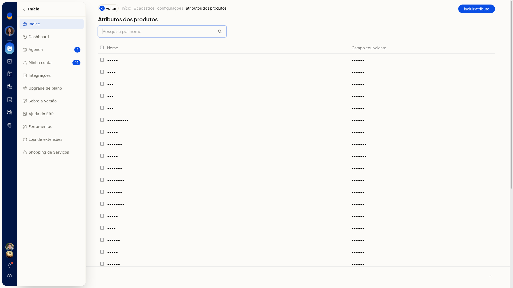
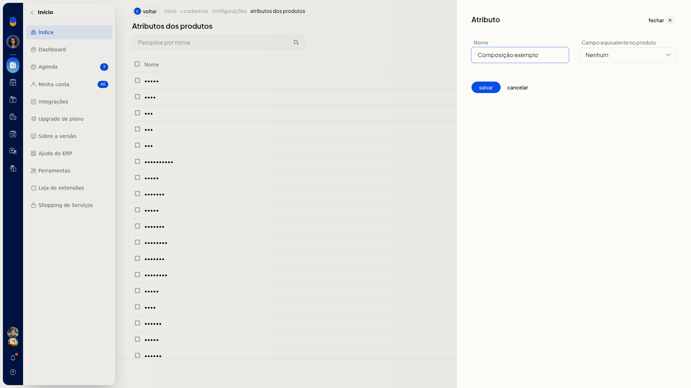
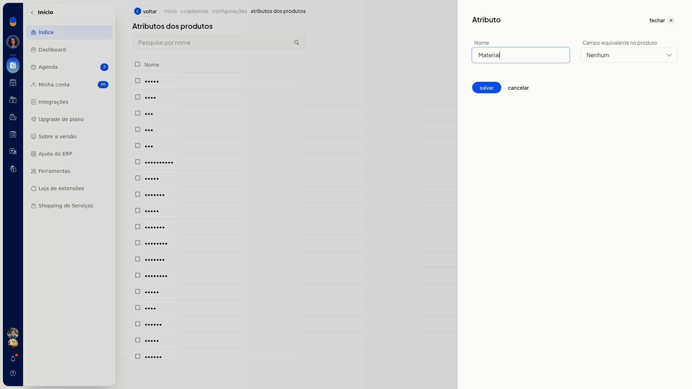
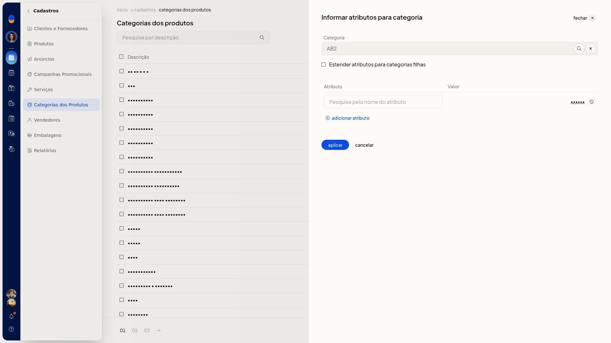
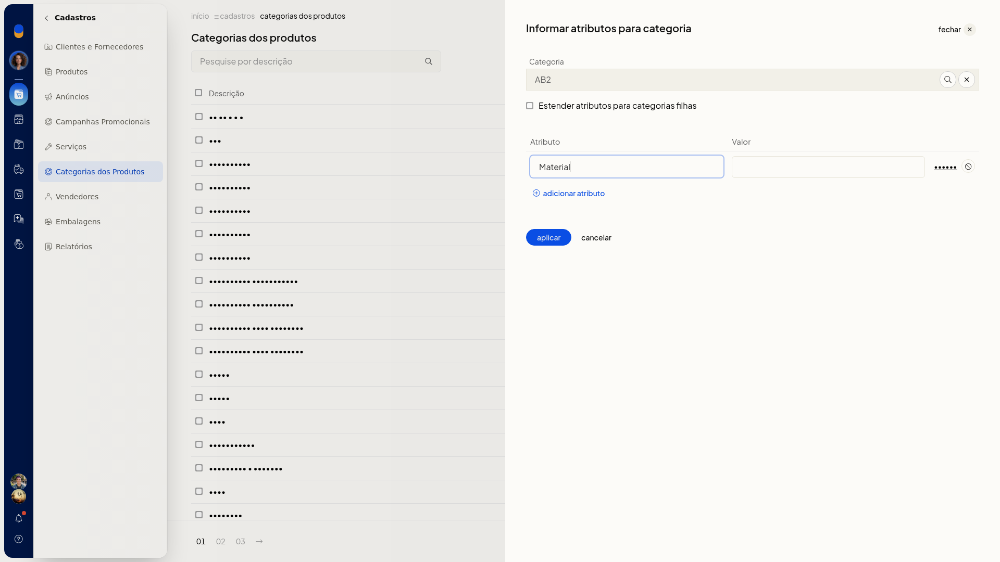

Atributos dos produtos e ficha técnica
Pré-requisitos
- Para informar atributos em uma categoria, a categoria e o atributo já precisam estar cadastrados.
Importante
- Em Informar atributos, Categoria não aceita texto livre: o que você digita direto no campo não permanece. Escolha a categoria na busca.
- O nome em Atributo precisa ser de um atributo já cadastrado. Se o nome não existir, a tela indica que não foi encontrado.
- Cancelar na inclusão ou na edição de atributo fecha o painel sem gravar.
- Cancelar em Informar atributos fecha o painel e volta à lista de categorias sem aplicar.
Instruções
Incluir ou editar um atributo
-
Acesse Configurações > Cadastros.
-
Abra as configurações de atributos de produtos. A lista tem pesquisa por nome e as colunas Nome e Campo equivalente.

-
Clique em Incluir atributo.
-
Informe o Nome.
-
Selecione o Campo equivalente para ligar o atributo a um campo da ficha:
-
Nenhum
-
GTIN
-
Código (SKU)
-
Marca
-
Unidade
-
Fornecedor
-
Peso Bruto
-
Peso Líquido
-
Altura Embalagem
-
Largura Embalagem
-
Comprimento Embalagem

-
Para alterar um atributo já cadastrado, abra a linha na lista. A edição usa os mesmos campos Nome e Campo equivalente.

-
Grave o atributo no painel. Cancelar fecha sem gravar.
Informar atributos para uma categoria
-
Acesse Cadastros > Categorias dos Produtos.
-
Clique em Informar atributos.

-
Busque a categoria e confirme no seletor. A confirmação preenche Categoria e fecha o seletor.

-
Se quiser aplicar os mesmos atributos às categorias filhas, marque Estender atributos para categorias filhas.
-
Informe Atributo e Valor. Use o nome de um atributo já cadastrado.

-
Para incluir outra linha, clique em Adicionar atributo.
-
Clique em Aplicar. Cancelar fecha o painel e volta à lista sem aplicar.
Informações adicionais
O campo equivalente liga o atributo à ficha
Ao cadastrar o atributo, Campo equivalente indica qual dado da ficha ele representa, como GTIN, Código (SKU), pesos ou medidas de embalagem. Nenhum deixa o atributo sem esse vínculo.